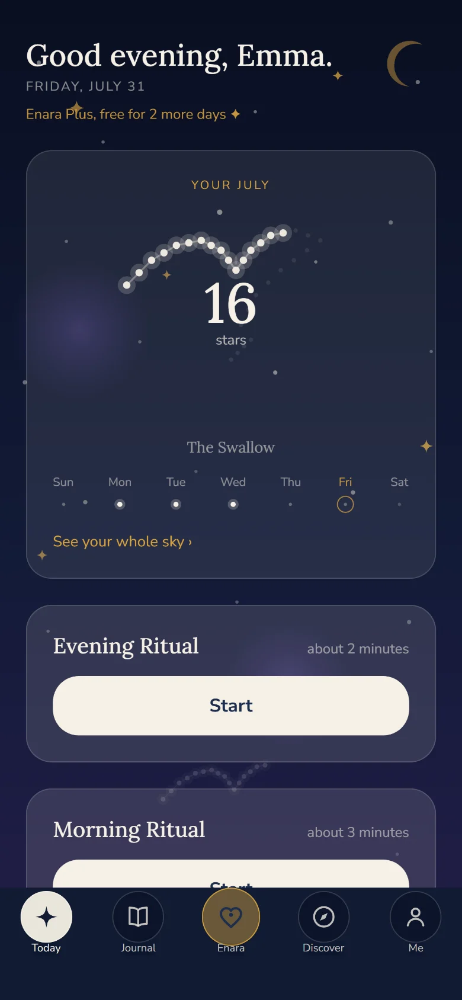
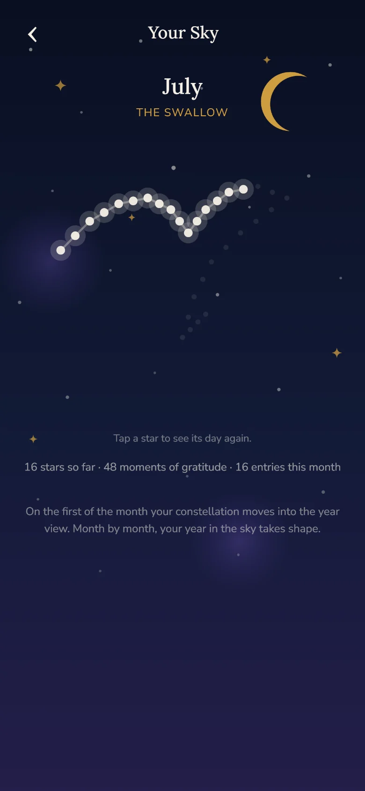
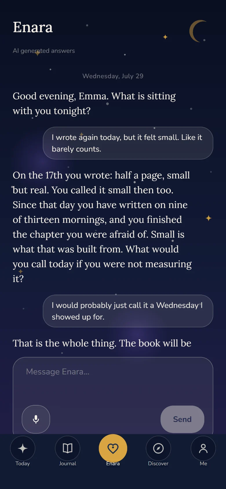
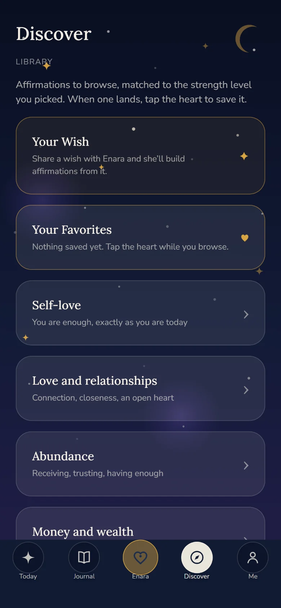
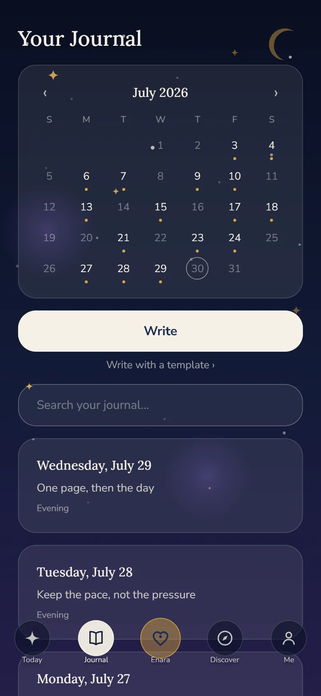

Your manifestation journal
What you want has a place here.
A morning ritual, an evening ritual, and a journal that remembers what matters to you. And because you should see what comes of it, Enara shows you what you have already built.
For iPhone. Your rituals and your journal stay free, always. Every new account gets three days of Plus, with no payment details.

Private and encrypted, your words stay yours
No ads, no tracking, no data selling
Three free days, and no subscription starts on its own
A day with Enara
A quiet start, a soft ending.
Enara is not a program to complete. She gives your day two small anchors and keeps what comes out of them.
Three minutes in the morning. Two in the evening.
- Morning is where you aim. One intention, one moment of gratitude, and your line for today, built from your own words instead of a calendar quote.
- Midday asks you back. Enara picks up what you set out to do this morning and asks about exactly that. One line is enough. Say more if you want to.
- Evening does not grade you, it closes. What was good, what you let go of, what you are grateful for. Then the day is closed and you can sleep.
Three free days, no payment details.
Your sky
Every day you write becomes a star.
One point for every day of the month. Tap a star and it takes you back to the day it came from. Nothing expires, nothing nags you into a streak. Your sky only grows.

That is a real July. Sixteen entries, sixteen stars, one swallow.
Your first star happens tonight.
Features
What is with you every day.

Enara knows your journal and listens.Plus
Enara remembers what matters to you. She reflects your own words back and asks the one question that moves you forward. In the screenshot she answers a real doubt, using an entry from four days earlier.
- Memory from your journal, across weeks and months
- Write to her, or just speak, the microphone is listening
- A greeting in the morning and in the evening, if you want one
Enara is an artificial intelligence and she tells you so plainly. She does not replace therapy, and if things get heavy she names people who can listen right now.

720 affirmations that meet you where you are.
The library holds twelve areas of life, from self love to abundance. Most apps hand everyone the same lines. Enara asks how far you can go today and moves with you, because a sentence you cannot believe yet does nothing for you.
- Twelve categories, 720 written affirmations
- Three strength levels: gentle, growth, bold
- One line drawn for you every day
- Tell Enara a wish and she builds affirmations from it

Your journal, one day at a time.
Morning and evening land on the same page: intention, gratitude, what was good. Speak instead of typing and Enara turns it into a clear entry. After two weeks it reads like a letter to yourself.
- A calendar that shows at a glance which days you were there
- Search your own journal by word
- Write freely, or start from a template
The rituals, your journal and your sky cost nothing, permanently.
And more
Small things that make the difference.
Your vision board
Your own photos, not stock imagery. Under each one you write a sentence in the present tense, and above it stands your wish, in the words you told Enara. When something arrives, it gets a golden check and stays as proof.
Writing templatesPlus
For when the blank page is too blank: seven templates, from scripting your life as if it already happened to a letter to your younger self. Two more belong to the moon ritual.
Moon ritualsPlus
At the new moon and the full moon the ritual opens: you write a letter to your next full moon and open it when it is full.
The month comes back to you
At the end of the month Enara lays it out once more: the finished constellation, your number, and a sentence you wrote yourself. Not a trophy. Proof that you were there.
Share a line
A sentence that lands becomes a card in a starry sky with one tap. Send it to a friend, put it in your story, or keep it with your photos.
ImpulsesPlus
If you want them, Enara reaches out with a short impulse, personal and quiet instead of loud and constant.
Weekly questions
Enara gets to know you slowly: one small question a week. Your answers stay visible to you, and deletable.
Your constellation
From what you have told Enara about yourself, an image, a name and a path take shape. No new questions, no quiz. It changes when you change.
Your favorites
Lines that land go into your collection and come back to you when they fit.
Trust
Your words stay yours.
A journal only works if you can be honest in it. That is why trust is part of the product here, not a footnote.
On your phone first
Much of it stays on your device. Your account keeps your entries encrypted so they follow you to a new phone.
No ads, no tracking
Enara shows you nothing but Enara. No ad networks, no analytics for marketing.
AI only with your yes
Not a word leaves your device toward an AI before you have said yes. You can take that yes back at any time.
Fair stays fair
No weekly subscription, no hidden costs. What you have written stays yours, with or without a subscription, always.
Pricing
Plain and simple.
Every new account starts with three free days and full access, with no payment details. After that you decide. A subscription never starts on its own.
Enara
Your daily ritual, free for good.
$0 forever
- Morning ritual and evening ritual
- Journal with calendar and daily pages
- Your sky with every constellation
- The library to browse
Enara Plus
With Enara as your companion.
$12.99 a month
or $59.99 a year
- Conversations with Enara, with memory from your journal
- Her greetings in the morning and in the evening, in her own words
- Her impulses in between, drawn from what you talked about
- Speak your entry and she turns it into a clear one
- The moon ritual and all seven writing templates
- Your Wish: Enara builds affirmations from your own words
- Your vision board without a limit
You see the price in the App Store before every purchase. A subscription renews automatically until you cancel, which you can do at any time in your store settings. Your entries stay with you in full, with or without a subscription.
You start on the free version. Plus is only there if you want it.
Questions
Answered briefly.
What does Enara cost?
The rituals, the journal and your sky are free permanently. Enara Plus is $12.99 a month or $59.99 a year, which works out to $5 a month. That covers conversations with Enara and her memory, her greetings and impulses, speaking your entries, the moon ritual, all seven writing templates, affirmations built from your own wish, and the vision board without a limit. Every new account starts with three free days and full access, with no payment details.
Does a subscription start automatically after the free days?
No, never. After the three days Enara moves to the free version by itself. A subscription only exists if you start one in the App Store yourself.
What happens to my entries?
Your entries live on your device and are backed up encrypted in Europe, so they follow you to a new phone. Enara shows no ads and sells no data. The details are in the privacy policy.
Does an AI just read along in my journal?
No. It only sees what you hand it yourself, and only after you have agreed. Take that yes back and Enara stays fully usable as a journal.
Does Enara replace therapy?
No. Enara is a tool for self reflection and wellbeing, not a medical or therapeutic service. If things get heavy, Enara names places with real people who can listen right now.
Is Enara on Android?
Enara launched on iPhone first. The Android version is in closed testing and is coming in the next few weeks. Write to support@getenara.app and we will let you know.
Worth reading
What holds up, and what does not.
Every claim comes with an honest note on what the research shows and where it stays quiet.
What to write in a manifestation journal
Six building blocks for the blank page, each with its honest evidence note.
Scripting: how to start and what to write
Five rules, six opening lines to copy, and the paragraph almost every guide leaves out.
Self love affirmations
30 lines in three strengths, so none of them lands like a lie.
How manifestation actually works
The five steps that do the work, and what to take from Goddard, Byrne, Hicks and Dispenza.
Enara means swallow.
She comes back every year without anyone calling her. Enara is on the App Store, for iPhone. Questions are welcome at support@getenara.app
Get Enara free